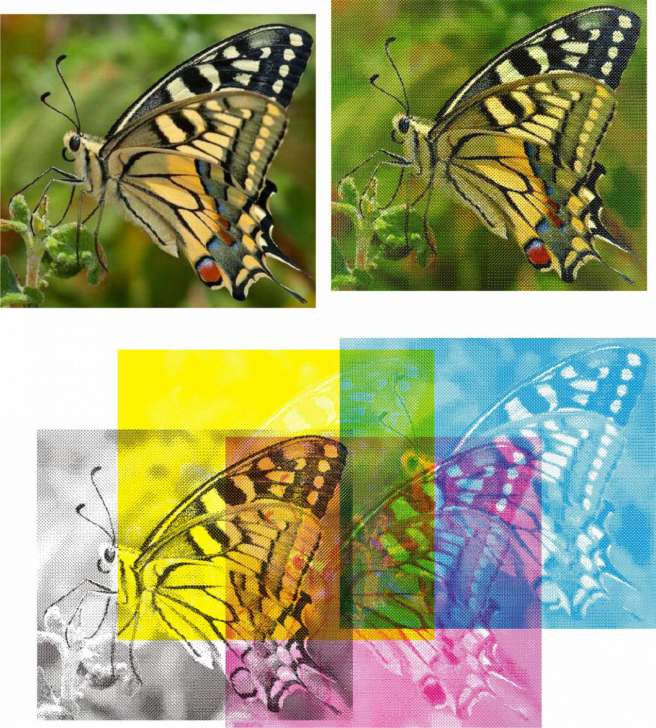

Изготавление многоцветного трафарета, помогите
artclon / 03.06.2010, 23:43/00:41
Форум:
Добрый день!
Хочу сделать многоцветрый трафарет. Но не могу решить первую задачу - автоматически уменьшить количество цветов в рисунке. Хочу изготовить 4-ех цветный трафарет из полноцветной фотографии. (т.е. преобразовать n-ое количество цветов в 4 цвета). Помогите...
нет нужно для того ,чтобы я могла подготовить макет для печати на пакетах)))) и все) просто я не умею готовить такие макеты..а оченно нужно..вот..
Добавлено (18.02.2011, 11:52)
---------------------------------------------
то есть получается ,что "растискивание" это определенный уровень прозрачности?
в фотошопе такая фигня за пять минут делается, но это через растрирование и для шелкографии

Класс...а без фотошопа - нельзя? может я действительно не сильна в терминах..может и для шелкографии...а вопрос: можно потом слить какие то два слоя и окрасить в нужный цвет?
Может так?
http://www.nachnidelo.narod.ru/tech/articles/art017_cmyk1.htm
http://nachnidelo.narod.ru/tech/articles/art018_cmyk2.htm
Слои, в принципе, можно красить в любой цвет, потому что получаются четыре отдельных файла, одноцветных изображения (Monochrome bitmap). Загрузив их в Корел можно раскрасить любой из них, просто щелкнув левой/правой кнопками мыши по палитре.
Вообще, biswom, я бы просто посоветовал вам набрать в поисковике фразу "подготовка макета для флексографии". Первые несколько ссылок, полученые в Яндексе достаточно подробно объясняют особенности макетов.
P.S. кстати, топикстартер - artclon - тихо курит в сторонке, а biswom с одушевлением продолжает тему. Если, конечно, это не один и тот же человек...
Спасибо за пояснение...иногда забываю вескую фразу гугл вам в помощь)))) да,я не топик стартер...просто люблю получить ответ на интересующий меня вопрос, а не курить в сторонке)))) спасибо всем за поддержку..если смогу нарыть нужную инфу - выложу здесь урок,чтобы уж совсем закрыть эту тему)
biswom, ознакомтесь с этим: RIP Harlequin SDP-RIP.
а как с этим знакомиться?
гугол вам в помощь))
Я вам описал способ как получить, то что вам надо, а не старался описать что такое растискивание. Не смотрите между строк.
Растискивание это увеличение площади печатного элемента на оттиске относительно его площади.
Страницы